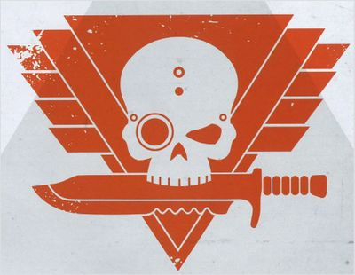
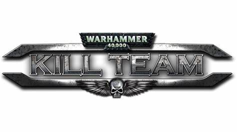
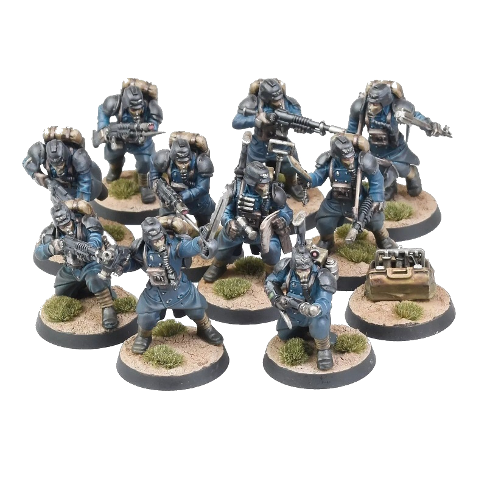

Leading your Elite Squad in Kill Team
Kill Team is an exciting, fast-paced skirmish game set in the Warhammer 40,000 universe. In *Kill Team*, players command a small team of fighters, each with unique abilities and special skills, competing to outwit and defeat their opponents on a tactical battlefield. Each game typically takes about an hour, making it perfect for newcomers to tabletop gaming or seasoned players looking for a quick, action-packed experience.

What is Kill Team?
The Basics of Combat in the Year 40,000
Designed with a focus on small-scale combat, Kill Team is a game of strategy, teamwork, and rapid decision-making. Players can choose from a variety of factions and customize their squads to match their strategic preferences. With dynamic objectives, engaging gameplay, and richly detailed miniatures, Kill Team offers an immersive experience for fans of the Warhammer universe.
What Kill Teams are There?
And How do You Want to Play?
Choose from a wide variety of strategies and combat styles, whether you prefer up close and personal, or long shots from vantage points, there are all sorts of options to choose from, such as...
- Human Elite Soldiers who throw themselves into battle
- Orkish "Kommandos" who excel at sneaking around
- Ancient Terminators who come back from the dead
- Bipedal Bugmen who are controlled by a wiser race
...and many, many more. Kill team boasts new teams every 3-4 months, and their updated rules can be found here.
Personally, I have 2 kill teams, and am assembling the first team mentioned. They aren't done yet, but hopefully will soon look like this:
